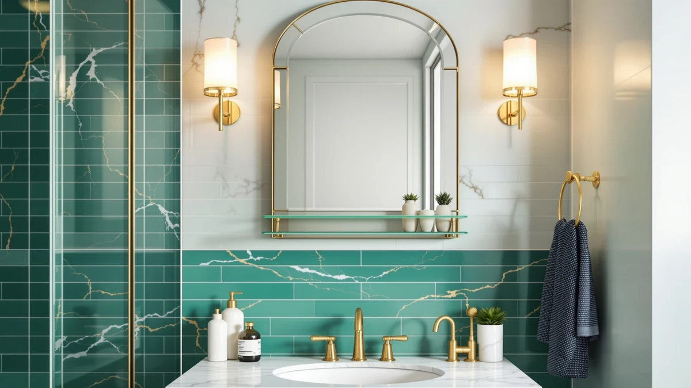

Best Bathroom Mirror With Shelf of 2026: 7 Top Picks
Prices and picks verified as of August 2026. Independent, reader-supported reviews.


Quick Answer
The best bathroom mirror with shelf storage for most bathrooms is the WisHomee Black Bathroom Mirror Medicine Cabinet ($229.99 on Amazon as of July 2026). Its 25.5 by 25.5 inch tempered glass panel hides shelf storage inside an aluminum cabinet, so the counter stays clear. For under $100, the ANYHI 20 by 24 inch wall mirror handles the basics at $79.99.
Our pick: Black Bathroom Mirror Medicine Cabinets at $229.99 Check Price on Amazon
Bottom line: our top pick is the Black Bathroom Mirror Medicine Cabinets with LED Lights at $229.99. The best budget option is the ANYHI 20"x24" Bathroom Wall Mirror with Shelf at $79.99.
Things to Know Before You Buy
- Cabinet or open shelf: a medicine cabinet like our WisHomee pick hides items behind the glass, while an open mirror with shelf space keeps them in reach but on display.
- Measure the vanity first. Picks in this guide run from 20 inches wide (ANYHI) to 32 inches tall (deerlove), and a mirror should sit narrower than the cabinet below it.
- Build matters in steam. All seven picks pair tempered glass with aluminum, the combination that survives the humidity that warps wood-framed shelf mirrors.
- Lighting and power cost extra. The Janboe, Mepplzian, and MIRROLIA add LED panels, and the Mepplzian adds sockets and USB ports; those features push prices $90 or more above the flat mirrors.
- Budget range: prices here run from $79.99 to $389.99, checked on Amazon in July 2026.
The best bathroom mirror with shelf storage clears your counter and upgrades your wall in a single purchase. Toothbrushes, razors, and skincare bottles migrate off the vanity and behind or beside the glass, where they belong. We compared seven models for this guide, from a $79.99 flat wall mirror to a $389.99 LED medicine cabinet, and priced each one on Amazon as of July 2026.
After lining up the specs against owner feedback, we recommend the WisHomee Black Bathroom Mirror Medicine Cabinet ($229.99 on Amazon as of July 2026) for most bathrooms. Its 25.5 by 25.5 inch tempered glass panel hides shelf storage inside an aluminum body, so you get the capacity without ever seeing it. The black frame also anchors a plain white bathroom without a renovation.
Your bathroom may point you elsewhere. The ANYHI 20 by 24 inch wall mirror does the job for $79.99 if you rent or run a tight budget. The Janboe LED cabinet suits a wide double vanity, and the deerlove arched mirror fits traditional rooms where a black square would clash. We cover all seven below, along with the models we cut and why.
Why You Should Trust Us
I'm Ilane Tall, and I research bathroom fixtures for Best Bathroom Mirrors, where I have compared mirrors, medicine cabinets, and vanity hardware across dozens of guides. For this bathroom mirror with shelf roundup, I pulled the spec sheet and price history for each of the seven finalists and read their owner reviews instead of relying on manufacturer copy.
We list flaws for each pick below, including our top choice. When a product earns its spot on price alone, or loses points on installation, we say so and name the number.
How We Picked
We started with the mirrors offering shelf or cabinet storage that Amazon sells in the sizes American bathrooms use, then applied four filters. Construction came first: each finalist pairs tempered glass with an aluminum frame, because owner reviews of wood and MDF shelf mirrors describe swelling and peeling within a year of shower humidity. Second, size: the lineup spans 20 by 24 inches to 30 by 32 inches, so both powder rooms and double vanities have an option.
Third, price coverage. A best bathroom mirror with shelf guide fails its reader if it only lists $300 cabinets, so we kept the $79.99 ANYHI and the $89.99 deerlove alongside the premium LED units. Fourth, we dropped any model whose recent reviews carried unresolved complaints about glass broken on arrival or missing mounting hardware.
How We Compared
We benchmarked the seven finalists against each other, not against marketing claims. For each mirror with shelf storage, we checked the listed dimensions against product photos and owner-posted measurements, since medicine cabinets in particular tend to quote glass size and stay quiet about the depth the box adds to your wall.
We then read recent owner reviews for each model and logged recurring complaint patterns: fogged LED strips, doors that drift open, shelves that flex under heavy bottles. Those findings feed the flaws section under each pick. Last, we tracked prices through early July 2026 so the numbers you see here match what Amazon charged when we published.
Our Picks

Black Bathroom Mirror Medicine Cabinets
What we like
- 25.5 by 25.5 inch glass covers most single-sink walls
- Aluminum body and tempered glass stand up to daily shower steam
- Interior shelving keeps bottles off the counter and out of sight
Flaws but not dealbreakers
- $229.99 buys almost three ANYHI mirrors
- The black frame commits your fixtures to a cool, modern palette
| Material | Tempered glass + aluminum |
| Size | 25.5"L x 25.5"W |
The WisHomee cabinet wins because it treats the shelf question differently than the flat mirrors here: instead of parking a ledge under the glass, it puts the storage behind it. The 25.5 by 25.5 inch square face suits the wall above a standard single vanity, and the tempered glass and aluminum construction matches what you would find on cabinets costing far more. Close the door and the bathroom shows a clean black-framed mirror, not a shelf of half-used products.
Weigh the price before you commit. At $229.99 on Amazon as of July 2026, it costs $150 more than the ANYHI runner-up, and if your storage needs stop at a razor and a toothbrush, that gap is hard to defend. Buy the WisHomee when counter clutter has become a daily annoyance and you want it gone rather than reorganized. Its matte black frame also does the styling work a plain frameless panel cannot.

ANYHI 20"x24" Bathroom Wall Mirror
What we like
- $79.99 price, the lowest of our seven picks
- Compact 20 by 24 inch footprint fits powder rooms
- Same tempered glass and aluminum build as mirrors twice its price
Flaws but not dealbreakers
- Open storage keeps your products on display
- Too small to anchor a wide double vanity
| Material | Tempered glass + aluminum |
| Size | 24"L x 20"W |
The ANYHI answers the budget question directly. For $79.99 on Amazon as of July 2026, you get a 20 by 24 inch tempered glass mirror with aluminum framing, the same material pairing as our $229.99 top pick. In a small bathroom, or in a rental where drilling a full cabinet into the wall invites a conversation with the landlord, this is the shelf mirror we would hang.
You accept two limits at this price. Whatever you store stays visible, so the counter-clearing effect depends on your tidiness rather than on a cabinet door. And at 20 inches wide, the ANYHI looks undersized above any vanity past 30 inches. In a guest bath or a first apartment, neither flaw costs much, and the $150 you save over the WisHomee covers the rest of the room.

Janboe LED Medicine Cabinet Bathroom
What we like
- 30 by 32 inch face covers a double-vanity wall
- Built-in LED lighting replaces a separate fixture
- Cabinet design hides storage behind the glass
Flaws but not dealbreakers
- $389.99 makes it the most expensive pick in this guide
- The footprint overwhelms a compact bathroom
| Material | Tempered glass + aluminum |
| Size | 30×32inch |
The Janboe is the pick you scale up to. At 30 by 32 inches it is the largest mirror with shelf storage in this lineup, sized for the wall above a double vanity where the ANYHI or even the WisHomee would float in empty space. The LED lighting earns its keep there too, spreading usable light across two sink stations instead of forcing a separate vanity fixture into the budget.
You pay for all of it. At $389.99 on Amazon as of July 2026, the Janboe costs $160 more than our top pick and nearly five times the ANYHI, and in a compact bathroom that money buys size you cannot use. Choose it when the wall is wide, two people share the sink, and you want the mirror, the lighting, and the storage handled by one purchase.

Creative Co-Op Rectangle Wall Mirror
What we like
- 27.8 by 19.5 inch rectangle suits standard single vanities
- Decor-first design from a housewares brand, not a fixtures catalog
- $139.99 lands well under the lighted cabinets here
Flaws but not dealbreakers
- The $79.99 ANYHI undercuts it by $60 on function alone
- No lighting or enclosed storage at a price where the Mepplzian adds both
| Material | Tempered glass + aluminum |
| Size | 27.8"L x 19.5"W |
Creative Co-Op is a housewares brand, and this rectangle wall mirror leans decorative where the rest of our picks lean functional. The 27.8 by 19.5 inch proportions sit comfortably above a standard single vanity, and the tempered glass and aluminum construction keeps it honest in a humid room. If a black medicine cabinet reads too clinical for your bathroom, this is the styled alternative in the lineup.
Buy it for the styling, not the spreadsheet. At $139.99 on Amazon as of July 2026 it costs $60 more than the ANYHI without adding lighting or a cabinet, and the $169.99 Mepplzian adds both plus power outlets for $30 more. The buyer it fits treats the mirror as part of the room's design and the shelf space as the bonus.

deerlove Traditional Arched Mirror with
What we like
- 32 by 20 inch arch adds height above a narrow vanity
- $89.99 price sits within $10 of the ANYHI
- Traditional profile fits farmhouse and vintage rooms the modern picks cannot
Flaws but not dealbreakers
- The arch shape limits placement flexibility compared to a rectangle
- No lighting or enclosed cabinet storage
| Material | Tempered glass + aluminum |
| Size | 32"L x 20"W |
The deerlove earns its slot on shape. Six of our seven picks are squares and rectangles, and in a traditional or farmhouse bathroom, all six can look like they arrived from an office building. This arched mirror runs 32 inches tall by 20 wide, drawing the eye upward over a narrow vanity, and it keeps the tempered glass and aluminum build we required of the whole field.
At $89.99 on Amazon as of July 2026, it costs $10 more than the ANYHI, which turns the decision into a matter of style rather than budget. Skip it if you might rearrange the bathroom later, since a tall arch dictates its wall placement in a way a 20 by 24 rectangle does not. Pick it when the room speaks traditional and needs its mirror with shelf storage to match.

Mepplzian Lighted Medicine Cabinet with
What we like
- Built-in sockets and USB ports power trimmers and toothbrushes at the glass
- 24 by 30 inch lighted cabinet at $169.99, well under the Janboe
- Enclosed storage plus lighting in one unit
Flaws but not dealbreakers
- Costs $90 more than the flat ANYHI if you skip the electronics
- Powered features tie placement to a nearby power source
| Material | Tempered glass + aluminum |
| Size | 24x30-Sockets & USB |
The Mepplzian solves a problem the other six ignore: where the electric toothbrush charges. Its 24 by 30 inch lighted cabinet builds sockets and USB ports into the unit, so trimmers and brushes power up at the mirror instead of trailing cords across the counter you were trying to clear. Add the LED lighting and the enclosed shelf storage, and one purchase replaces three.
At $169.99 on Amazon as of July 2026, the Mepplzian delivers most of the Janboe's feature list for $220 less, giving up mainly the double-vanity size. Plan for the dependency, though: the lights and outlets need power at the wall, so check what sits behind your current mirror before ordering. If your household charges devices in the bathroom daily, spend the extra $90 over the ANYHI here.

Spliceable Modular LED Lighted Bathroom
What we like
- Spliceable modular design lets panels join side by side
- LED lighting built into a 20 by 28 inch panel
- $189.99 covers a lighted unit that can grow with the room
Flaws but not dealbreakers
- A single 20 by 28 inch module runs narrow for wide vanities until you add a second
- Costs $110 more than the ANYHI for similar wall coverage
| Material | Tempered glass + aluminum |
| Size | 20"×28" |
MIRROLIA designed this one for the bathroom that is not finished yet. The spliceable modular format lets a 20 by 28 inch LED panel today pair with a second module when you widen the vanity next year, and the tempered glass and aluminum build matches the rest of the field. No other mirror with shelf storage in this guide adapts after purchase.
Priced at $189.99 on Amazon as of July 2026, a single module costs $110 more than the ANYHI while covering a similar wall width, so the premium only pays off if you use the modularity or want the LED panel. Buy it mid-renovation, when the final vanity width is still an open question. Buy the WisHomee or the Janboe when the room is done and the measurements are final.
Quick Comparison
| Product | Material | Price | Rating | Best for | Get it |
|---|---|---|---|---|---|
| Black Bathroom Mirror Medicine Cabinets | Tempered glass + aluminum | $229.99 | 4 | Hidden shelf storage on a single vanity | View on Amazon → |
| ANYHI 20"x24" Bathroom Wall Mirror | Tempered glass + aluminum | $79.99 | 4 | Budgets under $80 and small rooms | View on Amazon → |
| Janboe LED Medicine Cabinet Bathroom | Tempered glass + aluminum | $389.99 | 4 | Double vanities wanting light and storage | View on Amazon → |
| Creative Co-Op Rectangle Wall Mirror | Tempered glass + aluminum | $139.99 | 4 | Decor-first framed look | View on Amazon → |
| deerlove Traditional Arched Mirror with | Tempered glass + aluminum | $89.99 | 4 | Traditional and farmhouse styles | View on Amazon → |
| Mepplzian Lighted Medicine Cabinet with | Tempered glass + aluminum | $169.99 | 4 | Charging devices at the mirror | View on Amazon → |
| Spliceable Modular LED Lighted Bathroom | Tempered glass + aluminum | $189.99 | 4 | Expandable modular shelf setups | View on Amazon → |
Should I buy a mirror with an open shelf or a mirrored cabinet?
Pick a cabinet like the WisHomee or Mepplzian when you want counter clutter hidden behind glass, and an open design like the ANYHI or Creative Co-Op when you reach for the same three items daily and want them in sight.
What size bathroom mirror with shelf fits a standard vanity?
Match the mirror to your vanity width and leave a few inches of wall on each side.